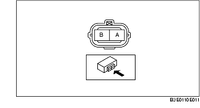
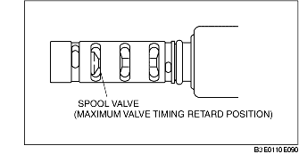
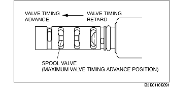

Oil control valve (OCV) inspection
Coil Resistance Inspection
1. Measure the coil resistance between terminals A and B using the tester.

Spool Valve Operation Inspection
1. Verify that the spool valve in the oil control valve (OCV) is in the maximum valve timing retard position as shown in the figure.

2. Apply battery positive voltage between the oil control valve (OCV) terminals A and B, and verify that the spool valve operates and moves to the maximum valve timing advance position.
- • When applying battery positive voltage between the oil control valve (OCV) terminals, the connection of the positive and negative battery cable can be with either of the oil control valve (OCV) terminals.
3. Stop applying battery positive voltage and verify that the spool valve returns to the maximum valve timing retard position.
